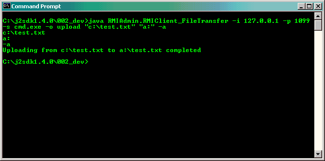

For example, you may wish to perform file transfer via Command Prompt (for Windows) or Console (for Unix-like Computer) rather than using the RMIAdmin GUI. The benefit is that you could then embed all your instructions into batch (*.bat) or shell script (*sh), and therefore the integration with other scripting/programming languages is made possible.
Usage instructions
-
java RMIAdmin.RMIAdmin_FileTransfer -h
Display the help menu
-
java RMIAdmin.RMIAdmin_FileTransfer -i ip_address
Specify the "IP Address" of remote RMIServer e.g. "203.186.94.62"
-
java RMIAdmin.RMIAdmin_FileTransfer -p port_no
Specify the "Port Number" of remote RMIServer e.g. "1099"
-
java RMIAdmin.RMIAdmin_FileTransfer -s shell
Specify the "Shell" of remote RMIServer e.g. "cmd.exe or /bin/bash"
-
java RMIAdmin.RMIAdminClient_FileTransfer -o "transfer_operations"
Specify the "Operation" of File Transfer to be executed on remote RMIServer.-
Available "transfer_operations":
-
upload "Source PathName" "Destination Path" -a
Upload file or directory to Remote Server in ASCII mode
[Windows Example - upload c:\test.txt in ASCII mode to a: of remote server]
java RMIAdmin.RMIAdminClient_FileTransfer -i 203.186.94.62 -p 1099 -s cmd.exe -o upload "c:\test.txt" "a:" -a

[Linux Example - upload /test.exe in ASCII mode to /mnt/floppy of remote server]
java RMIAdmin.RMIAdminClient_FileTransfer -i 203.186.94.61 -p 1099 -s /bin/bash -o upload "/test.exe" "/mnt/floppy" -a
-
upload "Source PathName" "Destination Path" -b
Upload file or directory to Remote Server in Binary mode
[Windows Example - upload c:\test.exe in Binary mode to a: of remote server]
java RMIAdmin.RMIAdminClient_FileTransfer -i 203.186.94.62 -p 1099 -s cmd.exe -o upload "c:\test.exe" "a:" -b
[Linux Example - upload /test.txt in Binary mode to /mnt/floppy of remote server]
java RMIAdmin.RMIAdminClient_FileTransfer -i 203.186.94.61 -p 1099 -s /bin/bash -o upload "/test.exe" "/mnt/floppy" -b
-
upload "Source PathName" "Destination Path" -[a|b] -r
Upload file or directory to Remote Server in Binary mode, and overwrite even if target exist
[Windows Example - upload c:\test.exe in Binary mode to a: of remote server even if exist]
java RMIAdmin.RMIAdminClient_FileTransfer -i 203.186.94.62 -p 1099 -s cmd.exe -o upload "c:\test.exe" "a:" -a -r
[Linux Example - upload /test.txt in Binary mode to /mnt/floppy of remote server even if exist]
java RMIAdmin.RMIAdminClient_FileTransfer -i 203.186.94.61 -p 1099 -s /bin/bash -o upload "/test.exe" "/mnt/floppy" -a -r
-
download "Source PathName" "Destination Path" -a
Download file or directory from Remote Server in ASCII mode
[Windows Example - download c:\test.txt in ASCII mode from remote server to a:]
java RMIAdmin.RMIAdminClient_FileTransfer -i 203.186.94.62 -p 1099 -s cmd.exe -o download "c:\test.txt" "a:" -a
[Linux Example - download /test.exe in ASCII mode from remote server to /mnt/floppy]
java RMIAdmin.RMIAdminClient_FileTransfer -i 203.186.94.61 -p 1099 -s /bin/bash -o download "/test.exe" "/mnt/floppy" -a
-
download "Source PathName" "Destination Path" -b
Download file or directory from Remote Server in Binary mode
[Windows Example - download c:\test.exe in Binary mode from remote server to a:]
java RMIAdmin.RMIAdminClient_FileTransfer -i 203.186.94.62 -p 1099 -s cmd.exe -o download "c:\test.exe" "a:" -b
[Linux Example - download /test.txt in Binary mode from remote server to /mnt/floppy]
java RMIAdmin.RMIAdminClient_FileTransfer -i 203.186.94.61 -p 1099 -s /bin/bash -o download "/test.exe" "/mnt/floppy" -b
-
download "Source PathName" "Destination Path" -[a|b] -r
Download file or directory to Remote Server in Binary mode, and overwrite even if target exist
[Windows Example - download c:\test.exe in Binary mode from remote server to a: even if exist]
java RMIAdmin.RMIAdminClient_FileTransfer -i 203.186.94.62 -p 1099 -s cmd.exe -o download "c:\test.exe" "a:" -a -r
[Linux Example - download /test.txt in Binary mode from remote server to /mnt/floppy even if exist]
java RMIAdmin.RMIAdminClient_FileTransfer -i 203.186.94.61 -p 1099 -s /bin/bash -o download "/test.exe" "/mnt/floppy" -a -r
-
upload "Source PathName" "Destination Path" -a
Usage Tips
-
Note that the command entered is non-case sensitive for Windows, but
case sensitive for all unix-like system.
-
If the command entered contain double quotes, the \ symbol should be included for the double quotes to
be passed in properly.
[Windows Example]
java RMIAdmin.RMIAdminClient_FileBrowser -i 203.186.94.62 -p 1099 -s cmd.exe -o copy "\"c:\program files\test\"" "a:"
-
Cross-platform execution is supported, therefore you can perform use command mode on a Linux Machine to
invoke instructions on remote Windows Machine, and vice versa.
-
To run this command successfully, you must include the path (including filename) where
you placed the RMIAdmin program (RMIAdmin.jar) in the system classpath.
[Windows Example]
set CLASSPATH=%CLASSPATH%;fullpath_of_RMIAdmin.jar
e.g. set CLASSPATH=%CLASSPATH%;c:\RMIAdmin\RMIAdmin.jar
* Assume RMIAdmin.jar is installed in C:\RMIAdmin
[Linux Example]
CLASSPATH=$CLASSPATH:fullpath_of_RMIAdmin.jar
e.g. CLASSPATH=$CLASSPATH:/RMIAdmin/RMIAdmin.jar
* Assume RMIAdmin.jar is installed in /RMIAdmin
-
Other than setting the system classpath, you may also use the java -cp parameter to
specify the CLASSPATH at runtime.
[Windows Example]
java -cp fullpath_of_RMIAdmin.jar
e.g. java -cp C:\RMIAdmin\RMIAdmin.jar RMIAdmin.RMIClient_FileTransfer -i ......
* Assume RMIAdmin.jar is installed in C:\RMIAdmin
[Linux Example]
java -cp fullpath_of_RMIAdmin.jar
e.g. java -cp /RMIAdmin/RMIAdmin.jar RMIAdmin.RMIClient_FileTransfer -i ......
* Assume RMIAdmin.jar is installed in /RMIAdmin
Related Topics:
|
|
Copyright 2005 © RMIAdmin. All rights reserved. |